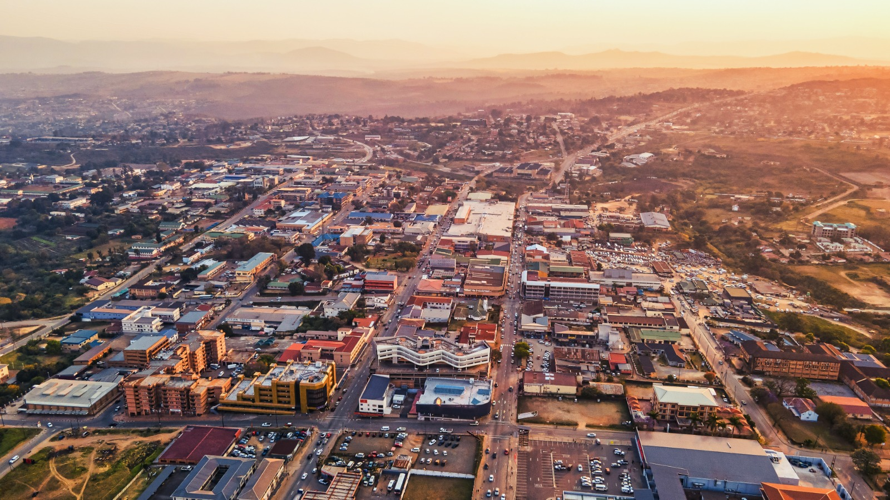

Manzini is the largest city in Eswatini and serves as the country's commercial and industrial hub. It is a busy, vibrant city full of markets and local culture.
What I love most about Manzini is the energy of the people and the famous Manzini Market, where you can find traditional crafts, fresh produce, and street food.
